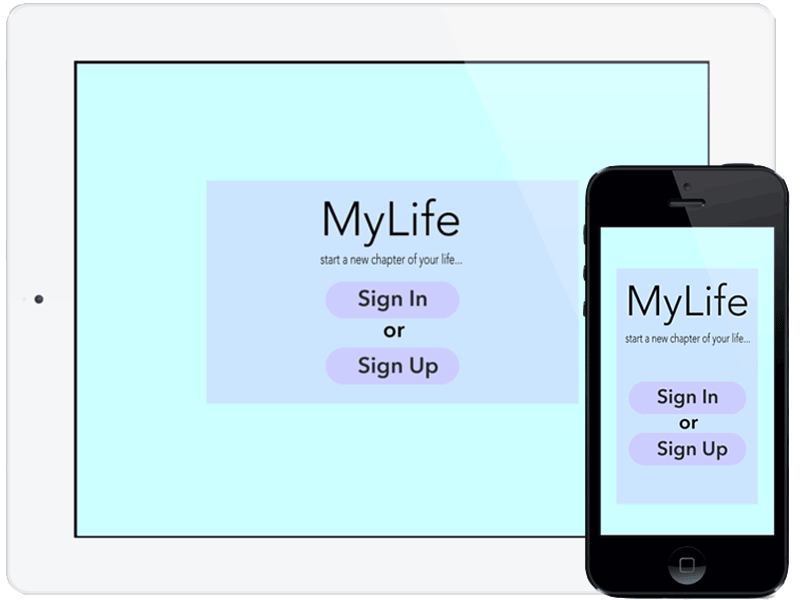

MyLife
Start A New Chapter Of Your Life

Start A New Chapter Of Your Life
Take note of everything in your life. With MyLife you can make long entries or jot down little moments. Each entry gets time-stamped so you know when you wrote it.
Add photos or videos to your diary entry. You can add filters, borders and even edit directly within the app. Drag the photo where you want and add titles. Each photo gets time-stamped too, so you'll never forget when you took them.
Save all your entries to iCloud, so you can have them anywhere at anytime. Choose from different templates, fonts, colours and stickers to decorate and customize your entries. Add a password to your diary so that only you can read your entries. Add friends from Facebook, Twitter or your own contacts. Use your current location to remember vacations, or family outings.
It's free and easy to use.